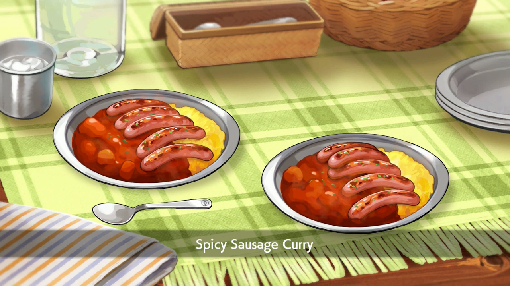

Sword and Shields Spicy Sausage Curry

Spicy Sausage Curry as seen in Pokemon Sword and Shield.
A Real Life Recreation of the Spicy Sausage Curry.
Spicy Sauasge Curry Origin
Pokemon Sword and Shield introduced a cooking mechanic in which trainers
are able to cook special types of curry from ingredients gathered in the Wild
Area and by NPCs throughout the game. One of these specialty curries that players
can create is the Spicy Sausage Curry. This yummy curry is known for having a savory
yet spicy kick which has been well beloved by pokemon along with their trainers.
Ingredients
For Curry Dex Roux
- Flour (5 TBL)
- Garam Masala (1 TBL)
- Curry Powder (1 TBL)
- Chili Powder (1 TBL)
- Coconut Oil (6 TBL)
Spicy Sausage Curry
- Olive Oil (1/2 TBL)
- 1/4 Onion (Roughly Chopped)
- 1 Carrot (Roughly Chopped)
- 1/2 Yukon Gold Potato (Roughly Chopped)
- 1 Clove of Garlic
- Chicken or Vegetable Broth or Water (3/4 cups)
- Salt to Taste
- Spicy Japanese Sauage (3 - 4)
- Rice of Choice (To Serve)
Recipe Instructions
For Curry Dex Roux
- Combine all spices and mix with a fork.
- Set aside.
- Spray three small heatproof bowls with no-stick spray.
- In a medium pot, whisk together coconut oil and flour.
- Cook over medium heat until a brick color is achieved, about 15 minutes. Whisk constantly but be carful, it’s very hot!
- After about 14 minutes turn off the heat and whisk to allow the roux to cool off a bit.
- After about a minute, add all your spices and whisk cooking off the heat for about a minute.
- Then CAREFULLY place your roux in the small bowls, dividing it equally.
- Allow to cool on the counter, then refrigerate for 2 hours or until solid.
- Using a knife, break pucks out of the bowl, wrap in foil, and freeze until ready to use.
For Spicy Sausage Curry
- In a small pot, sauté onions, carrots and garlic until lightly brown around the edges.
- Then, add broth and potatoes.
- Bring to a boil, cover, and cook at a low simmer for about 25 minutes or until potatoes are cooked.
- Add 1 disk of Currydex roux to the pot.
- Stir while cooking on low heat until the roux dissolves in the broth.
- Bring to a boil, then turn off the heat.
- Season to taste.
- Fry up spicy sausages of choice in a small non-stick pan until cooked.
To Serve:
- Pour curry in a small bowl or plate alongside rice of choice.
- op with cooked sausages, and garnish with chives if you like.
- Serve Immediately
- Enjoy!!!!